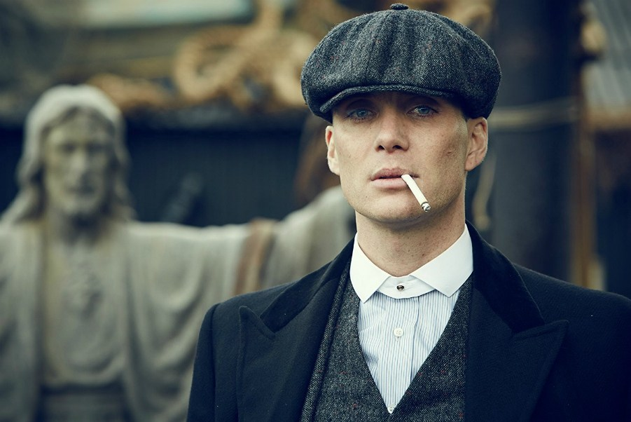

<!DOCTYPE html>
<html lang="en">
<head>
      <meta charset="UTF-8">
      <meta http-equiv="X-UA-Compatible" content="IE=edge">
      <meta name="viewport" content="width=device-width, initial-scale=1.0">
      <title>Kişisel Web Sitesi</title>
</head>
<body>
      
</body>
</html>

<h1>Abdusselam Karahan</h1>
<!-- Hakkımda Kısmı -->
<h2>Hakkımda</h2>
<p>Merhaba, ben Abdusselam Karahan Isparta'da yaşıyorum. Burdur Mehmet Akif Ersoy
   üniversitesi Beden Eğitimi ve Spor Öğretmenliği 2. Sınıf öğrencisiyim. Yetgen eğitim programında
   eğitim görmekteyim. Buna ek olarak Patika.dev eğitim portalında "Front-End" eğitimi görüyorum.
</p>

<!-- İlgi Alanlarım Hakkında Bilgiler Kısmı -->
<h2>İlgi Alanlarım</h2>
<ol> 
      
      <li>Dizi</li><ul>
            <li>
                <a href="https://www.imdb.com/title/tt2442560/" target="_blank">
                Peaky Blinders  
            </a>
            </li>
            
            <li>How İ Meet Your Mother</li>
            
            <li>Mr.Robot</li>
      </ul>
      
      <li>Film<ul>
            <li>
                  <a href="https://www.imdb.com/title/tt0816692/" target="_blank">
                  İnterstellar
            </a>
      </li>
            <li>Avengers End Game</li>
            <li>Matrix</li>
      </ul></li>
      
      <li>Oyun<ul>
            <li>
                  <a href="https://store.steampowered.com/app/730/CounterStrike_Global_Offensive/?l=turkish" target="_blank">
                 Counter Strike Global Offensive
            </a>
            </li>
            <li>League Of Legends</li>
            <li>Assetto Corsa</li>
      </ul></li>
</ol>

<h2>Sevdiğim Diziler</h2>

<h3>Peaky Blinders</h3>


<p> Peaky Blinders, Birinci Dünya Savaşı sonrasında Birmingham      İngiltere'de faaliyet gösteren "Peaky Blinders" adlı çeteyi anlatan suç-drama konulu televizyon dizisidir. Senaryosunu Steven Knight, yapımcılığını ise Caryn Mandabach ve Tiger Aspect Yapımcılık üstlenmiştir. Dizi Cillian Murphy tarafından canlandırılan Tommy Shelby rolündeki çete liderinin hikâyesini konu alır.[1]

      Konusu

      Altı bölümlük ilk sezon, 13 Eylül 2013 tarihinde BBC Two kanalında yayınlanmaya başladı. İkinci sezon prömiyeri 2 Ekim 2014'te ve üçüncü sezon açılışı ise 5 Mayıs 2016 tarihlerinde yapıldı (Amerika Birleşik Devletleri için 31 Mayıs).
      
      BBC, dizinin dördüncü sezonunu 15 Kasım 2017'de, beşinci sezonunu ise 25 Ağustos 2019'da yayınladı. Dizi 6. sezonu 27 şubat 2022'de yayınlanmıştır. 6. sezon diğer sezonlar gibi 6 bölümden oluşmaktadır. 6. sezon 6. bölümü 3 Nisan 2022'de yayınlanmış olup final yapmıştır. Dizinin yaratıcısı Steven Knight, dizi finalinden sonra bir de sinema filminin çekileceğini duyurdu.
      <h4>Konusu</h4>
      Çete yaptıkları son soygunla Müfettiş Chester Campbell'in (Sam Neill tarafından canlandırılan) dikkatini çeker ve dönemin Dışişleri Bakanı Winston Churchill tarafından bu soygunu araştırmak üzere Birmingham'a gönderilir. Hedefinde çeteler, gangsterler, komünistler ve müşterek suçlular vardır. Chester, şehri bu yasa dışı örgütlerden temizlemek için yemin eder ve bunun üzerine daha önce görev yaptığı Belfast’tan kendi ekibini de getirip çalışmalara başlar. Winston Churchill ilk seride Andy Nyman, ikinci seride Richard McCabe tarafından canlandırılmıştır. 

İkinci seri, ilk seriden iki yıl sonrasını konu alır. Shelby ailesi, "Kuzey ve Güney Londra" bölgesinde kendi suç örgütünü genişletmiş olarak görür. İkinci seri, 1921 yılında başlar ve Haziran 1922'deki Epsom Derby'si ile son bulur.

Üçüncü seri ise yine iki yıl sonrasını konu alır ve 1924 yılında başlar. Tommy ve ailesi daha tehlikeli bir dünyayı giriş yapar ve örgütü daha da genişletir fakat bu sefer genişleme uluslararasıdır. İnternet tabanlı film ve televizyon haberleri şirketi Screen Rant'a göre "Sezon toplumsal sınıflar ve imparatorluk kavramları etrafında dönmektedir. Bu durumları öngörülebilir olmasına rağmen şaşırtarak sıralar."

Dizi anlaşılacağı üzere zamanla büyüyen imparatorlukların, bozulmasını, karmaşık bir hale gelmesini ve bu şekilde sürdüremeyerek çöküşlerini anlatır. Sezon Tommy'ye, kirli sularda yüzerken nasıl genişleyeceği ve diğer köpekbalıklarına özellikle hükûmet üzerinde büyük etkisi olanlar  nasıl dikkat edeceğini öğretmiştir. Peaky Blinders esas olarak, kendi konforlu bölgesi dışında hızlı hareket eden ve riskli bir şekilde çok fazla genişleyen balığın hikâyesini anlatır. Bazı zamanlar vardır, riski önceden ödenmiştir."  `Father John Hughes rolünde Paddy Considine, Ruben Oliver rolünde Alexander Siddig, Grand Duchess Tatiana Petrovna rolünde Gaite Jansen ve Linda Shelby rolünde Kate Phillips Arthur'un karısı  üçüncü sezonda eklenen oyunculardan bazılarıdır.

Dizinin yayınlanan dördüncü sezonunda Oscar ödüllü ünlü oyuncu Adrien Brody, Luca Changretta rolünü canlandırırken 2019 yılında yayınlanan beşinci sezonunda ise Sam Claflin İngiliz politikacı Oswald Mosley'e hayat vermiştir.
</p>